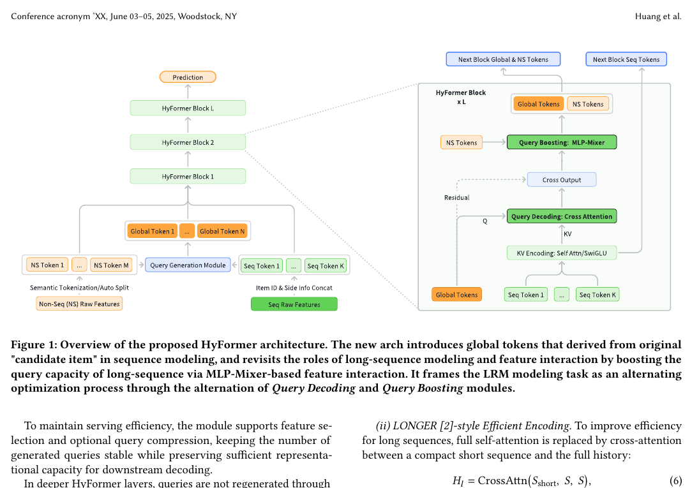
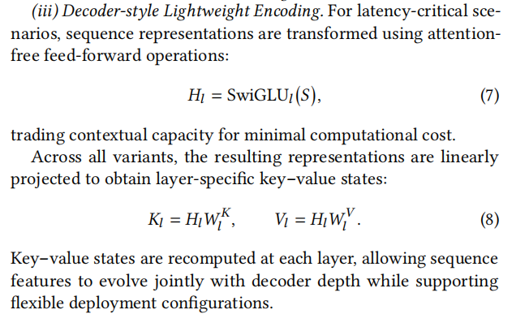
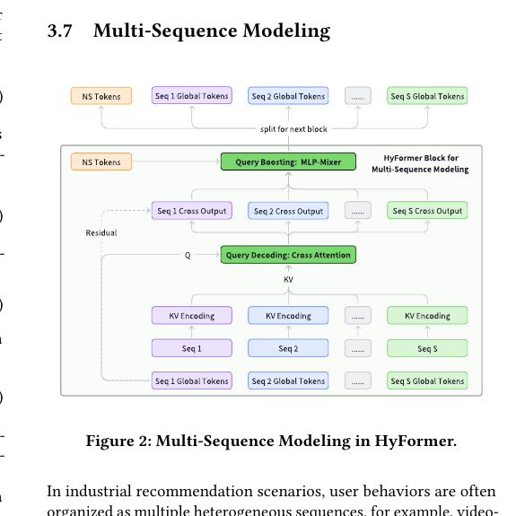
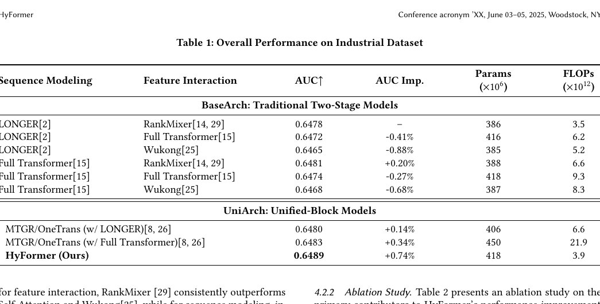
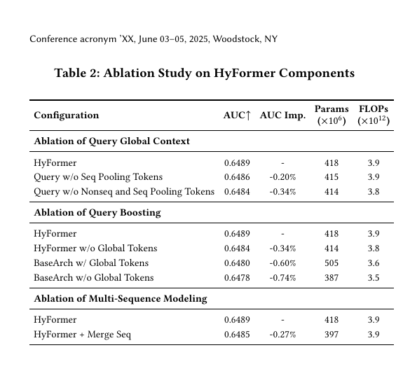
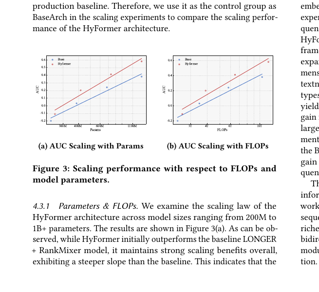
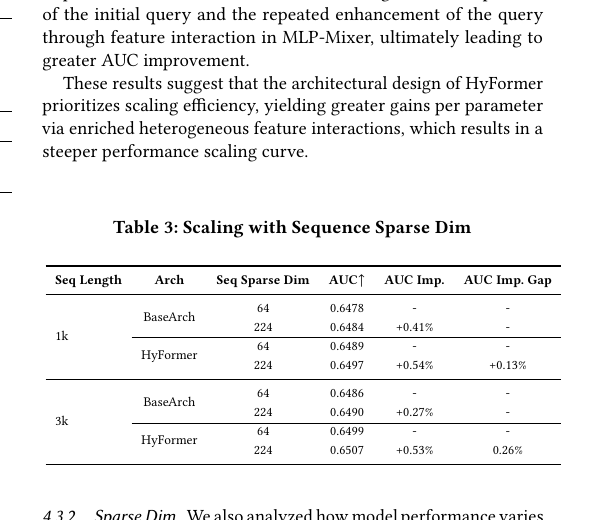
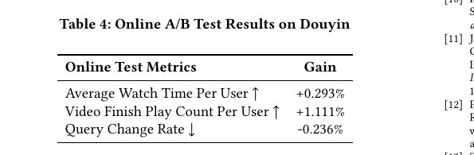

HyFormer
1. 基本信息
- 标题：HyFormer: Revisiting the Roles of Sequence Modeling and Feature Interaction in CTR Prediction
- 作者：Yunwen Huang, Shiyong Hong, Xijun Xiao, Jinqiu Jin, Xuanyuan Luo, Zhe Wang, Zheng Chai, Shikang Wu, Yuchao Zheng, Jingjian Lin
- 机构：ByteDance
- 时间：2026-01-19（arXiv v1）
- 链接：https://arxiv.org/abs/2601.12681
- 关键词：CTR Prediction、Long Sequence Modeling、Feature Interaction、Unified Architecture、Scaling Law
- pdf位置：
C:\Users\chaol\Desktop\推荐论文阅读\scaling\HyFormer.pdf - 笔记位置：
论文笔记/精排/模型扩展/HyFormer.md - 分类：精排 / 模型扩展
1.1 相关论文
- LONGER：HyFormer 保留并复用了 LONGER-style efficient encoding / layer-wise K/V 这条长序列建模路线，但把它从两阶段流水线里的 sequence compressor 改造成每层 query decoding 的可替换序列侧组件。
- RankMixer：HyFormer 的
Query Boosting明确借鉴了 RankMixer 的 MLP-Mixer 风格 token mixing，但不再把它放在 sequence compressor 后面做晚融合，而是塞进每一层里反复交替。 - OneTrans：同样在做“统一 backbone”这条路线，但 HyFormer 明确反对把多条序列和非序列 token 直接并成一条流；论文也在 related work 与 Table 1 中把 MTGR/OneTrans 当作直接统一架构对照。
2. 一句话总结
这篇论文想解决的是工业 CTR 大模型里一个越来越明显的问题：长序列建模 和 异构特征交互 虽然都在 scale up，但主流做法仍然是“先压序列，再和 dense 特征做交互”的两阶段流水线，导致信息流单向、交互太晚、扩参数的收益越来越低。HyFormer 的做法是把二者改造成一个交替迭代的统一骨干：每层先用更强的全局 query 去解码长序列，再用轻量 token mixing 把 query 和非序列特征继续揉在一起，让序列信息和异构特征在层间双向共演化。
lc总结：文章其实将之前“先压序列，再和 dense 特征做交互”的方式，进化为了“先造global token看全局信息，然后再分别交互”的方式。1
3. 论文在解决什么问题
3.1 两阶段范式为什么不够
作者批评的不是 LONGER 或 RankMixer 单点效果不行，而是这条工业主流范式本身存在三类结构性瓶颈：
- query 太弱：现有长序列压缩常用的 query token 通常只来自很少一部分 target 相关特征，导致压缩序列时可用上下文太少；但如果暴力增加 query 数，又会破坏 KV-cache / serving 效率。
- 交互太晚：序列 token 先被压缩成一个或少数几个 summary token，之后才和 heterogeneous features 发生交互，导致很多跨域依赖只能做浅层、隐式的 late fusion。
- scale 收益传不出来：序列模块和交互模块各自变大后，更多是在加强“局部子系统”，而不是加强联合表示，所以参数和 FLOPs 的增长不能高效转成最终 AUC 提升。
作者真正想要的是一种 更早、更深、双向 的信息流，而不是继续在两阶段流水线上单独打补丁。
3.2 Figure 1：HyFormer 把“压序列”和“做交互”改成层内交替

Figure 1 是整篇论文最关键的总览图。它表达的不是“把两个模块画在一起”，而是把原来串行的两步改成了一个反复迭代的 block：
- 输入侧先得到两类 token：
- 非序列 token：来自 user / context / item / cross features 的语义分组 token。
- 序列 token：来自行为序列的原始特征。
- 先通过
Query Generation把非序列特征和序列的 pooled summary 组合成多个 Global Tokens。 - 每层 HyFormer block 先做
Query Decoding：让这些 Global Tokens 去 cross-attend 长序列的 layer-wise K/V。 - 再做
Query Boosting：把已经吸收了序列信息的 query 与非序列 token 再做一次 MLP-Mixer 风格交互。 - Boost 后的 query 继续送入下一层，作为更强的 query 再次去“问”长序列。
我的理解是，HyFormer 把推荐建模改写成了一个“先从序列里读信息，再回到异构特征空间里增强 query，再带着更强 query 继续读序列”2的交替优化过程。这样 sequence side 和 feature side 都不再是一次性消费关系，而是逐层互相塑形。
4. 方法总览
4.1 Query Generation：先把 heterogeneous features 变成可解码长序列的 Global Tokens
HyFormer 的 query 不是只用 candidate item 或少数 target feature 生成，而是把以下信息合到一起：
- 所有 non-sequential feature token
F1 ... FM - 对行为序列做
MeanPool(Seq)得到的 sequence-level summary
然后用多组轻量 FFN 生成 N 个 query：
其中：
这一步的设计重点有两个：
- query 不再只代表 target item，而是携带了更完整的全局上下文。
- query 数量仍然受控，论文明确说支持 feature selection 和可选 query compression，所以不是把所有 token 数都原样抬到 query 侧。
另一个很重要但容易忽略的点是：更深层不会重新用 MLP 生成 query，而是直接复用上一层解码/增强后的 query。也就是说，HyFormer 不是每层重新提问，而是让 query 自己随层数逐步进化。
4.2 Query Decoding：用更强的 query 去解码长序列，而不是先把长序列压成死的 summary
HyFormer 的 Query Decoding 本质是：
这里 K^(l), V^(l) 来自当前层的 sequence representation encoding。论文给了三种 sequence-side 编码器：
- Full Transformer Encoding：容量最高，但最重。
- LONGER-style Efficient Encoding：用短 query sequence 去 cross-attend 全历史，把复杂度从
O(L_S^2)降到O(L_H L_S)。 - Decoder-style Lightweight Encoding：直接用
SwiGLU，进一步省算力。
关键不是具体选哪种，而是 序列侧表示会在每层重新算出新的 K/V，所以更深层 query 面对的不是同一份静态序列摘要，而是和网络深度一起演化的 sequence representation。
这一步解决的是旧范式里的“单向压缩”问题：现在不是序列先压完再给 interaction module，而是 global query 每层都能直接读取 sequence K/V，把非序列上下文显式注入 sequence-aware query 里。
4.3 Query Boosting：把 sequence-aware query 再和非序列特征做一次高效异构交互
Query Decoding 之后，query 已经吸收了长序列信息，但它和静态非序列 token 的交互还不够。所以 HyFormer 把 decoded query 和非序列 token 拼起来：
然后送进一个受 RankMixer 启发的 MLP-Mixer 风格 token mixing3。
这一块最容易让人卡住的是 形状为什么能残差相加。论文的做法是：
- 一共有
T个 token，每个 token 维度是D。 - 把每个 token 切成
T份子空间：
- 对每个子空间索引
h，收集所有 token 在这个子空间上的片段并拼接：
- 收集所有
\tilde{q}_h后，重新得到\hat{Q} \in \mathbb{R}^{T \times D}，再过PerToken-FFN，最后做残差：
这里残差成立的隐藏条件是：
D必须能被T整除，否则每个子空间大小D/T不成立。- token mixing 虽然做了“跨 token 重排”，但最终输出又被重新组织回
T × D，所以不需要额外 projection 就能 residual add。
这也是它比标准 self-attention 更轻的一点：它不显式学 token-token 相似度，而是靠固定的子空间重排加轻量 FFN 做跨 token 信息交换。
4.4 Figure 2：多序列不是强行 merge，而是先分开 decode，再在 query 空间里汇合

Figure 2 对应 HyFormer 的另一条关键判断：工业推荐里往往不是一条行为序列，而是多条语义不同的序列，比如长搜索点击序列、search sequence、feed sequence。论文认为直接把它们 merge 成同一条流会有两个问题：
- 不同序列的 feature space 和语义不同，强行对齐会抹掉差异。
- 若共享同一组 global tokens，会让重要序列拿不到足够表达容量。
因此 HyFormer 的 multi-sequence 方案是：
- 每条序列独立编码 K/V。
- 每条序列分配自己的一组 global tokens。
- 每条序列内部先独立完成 Query Decoding。
- 跨序列的信息交换不在 raw sequence 流里做，而是在 query-level token mixing 阶段做。
这等于把“多序列对齐”问题从 item-level sequence stream 转移到了更抽象、更短、更便宜的 global query space。
4.5 HyFormer block 的真正含义
如果只看公式，HyFormer 很像“Cross-Attention + MLP-Mixer”堆叠；但从建模逻辑上，它其实在做两件轮换的事：
- Query Decoding：让异构全局上下文去读长序列。
- Query Boosting：让读过长序列的 query 再回到异构特征空间里加强自己。
所以作者把它描述成一种 alternating optimization。我的理解是，这篇论文真正的创新不是单个算子，而是把 sequence modeling 和 feature interaction 的角色重新定义了：前者负责给 query 提供细粒度行为证据，后者负责不断把 query 扩充成更强的“读取器”。
4.6 训练与部署细节
论文最后还给了两个很工程化的优化：
- GPU Pooling for Long Sequence：长序列稀疏 ID 去重后放入压缩 embedding table，前向时在 GPU 上重建 sequence feature，减少 Host-to-Device 拷贝和主机内存压力。
- Asynchronous AllReduce：dense 参数使用异步梯度同步，把 step
k的同步与 stepk+1的前后向重叠；稀疏参数则尽早更新。论文说这种一小步 staleness 在实践里没有伤害收敛。
这部分不是论文主卖点，但能看出作者非常在意“这个 unified 架构是否真的能在工业系统里跑起来”。
5. 实验与结果
5.1 实验设置
离线实验来自字节跳动 Douyin Search 的真实 CTR 任务：
- 70 天日志
- 30 亿样本
- 特征包含 user / query / document / cross-feature / 多条 sequential features
- 主要三条序列：
- 长期搜索与点击序列，最长到
3000 - top-50 search sequence
- top-50 feed sequence
- 长期搜索与点击序列，最长到
实现上，所有 MLP-Mixer 的 token 数统一成 16；multi-sequence HyFormer 对应 13 个 non-seq token 加 3 个 global token（每条序列 1 个）；全部模型在 64 张 GPU 上训练。
5.2 Table 1：HyFormer 在更低 FLOPs 下拿到最高 AUC

Table 1 给出的结论很直接：
- 在传统两阶段
BaseArch里，最强组合是Full Transformer + RankMixer，AUC0.6481，但 FLOPs 要到6.6e12。 MTGR/OneTrans这类统一块模型也能涨点，但：w/ LONGER是0.6480w/ Full Transformer是0.6483- 后者 FLOPs 高到
21.9e12
- HyFormer 达到全表最高
0.6489，相对基线提升+0.74%，但 FLOPs 只有3.9e12。
这张表支持的是论文的核心论点：问题不是“统一架构一定比两阶段强”，而是 怎样统一。如果统一方式只是把所有 token 放进标准 attention 块里，算力成本很快失控；而且作者特别指出，MTGR/OneTrans 把 Global Tokens 和 Seq Tokens 一起作为 keys、只用 Global Tokens 作为 queries，容易让 Global Tokens 更倾向于 attend 到自己，而不是先充分吸收具体的 sequence item 信息。HyFormer 则刻意分离信息流：先用 query cross-attend sequence K/V，再在 query / non-seq token 空间里做 mixing，所以效果和效率同时拉了起来。
5.3 Table 2：query 的上下文来源、query boosting、multi-sequence 分开建模都不是可有可无

Table 2 基本把主要设计钉死了：
-
Query global context
- 去掉 sequence pooling tokens：AUC
0.6486，掉0.20% - 再去掉 non-seq 与 seq pooling，只剩原始 target query：AUC
0.6484，掉0.34%
这说明 HyFormer 的增益不是因为“用了更多 query token”这么简单，而是 query 里确实带入了更丰富的全局上下文。
- 去掉 sequence pooling tokens：AUC
-
Query boosting / Global tokens
HyFormer w/o Global Tokens：-0.34%BaseArch w/ Global Tokens：只比最原始 baseline 多+0.14%BaseArch w/o Global Tokens：-0.74%
这组结果很重要。它说明 global tokens 本身不是魔法，关键在于 它们能否在统一 block 内反复经历 decode → boost → decode。把更强 query 塞回传统两阶段架构里，收益明显小很多。
-
Multi-sequence modeling
HyFormer + Merge Seq：AUC0.6485，掉0.27%
这说明作者反对 sequence merge 不是拍脑袋，而是有离线证据支撑。
5.4 Figure 3：HyFormer 的 scaling slope 更陡

Figure 3 画的是 AUC 随参数和 FLOPs 扩展的曲线。图里最值得记的是斜率，而不是单个点：
- 当模型从
200M级一路扩到1B+时，HyFormer 始终保持比LONGER + RankMixer更陡的收益曲线。 - 论文把这解释为：更多参数和更多计算，能更直接转成“更丰富的 query + 更深的异构交互”，而不是只堆在序列编码器或 interaction 模块某一侧。
换句话说，HyFormer 不是只在一个固定预算点上赢，而是 更适合继续 scale。
5.5 Table 3：扩 sequence side information 时，HyFormer 吃到的红利更大

作者还做了一个很有意思的实验：把 sequence token 的 sparse embedding dimension 从 64 扩到 224，相当于给序列侧增加更多 side information。
结果是：
- 在
1k长序列下：- BaseArch：
0.6478 -> 0.6484，提升+0.41% - HyFormer：
0.6489 -> 0.6497，提升+0.54% - 额外增益差：
+0.13%
- BaseArch：
- 在
3k长序列下：- BaseArch：
0.6486 -> 0.6490，提升+0.27% - HyFormer：
0.6499 -> 0.6507，提升+0.53% - 额外增益差：
+0.26%
- BaseArch：
这组结果说明 HyFormer 不只是更会用更多参数，也更会用更丰富的 sequence-side side information。长序列越长，这个优势越明显。我的理解是，因为 HyFormer 的 query 每层都在重新读 sequence K/V，所以额外的序列侧信息更容易被传播到最终联合表示里。
5.6 Table 4：在线收益也成立

在线 A/B test 在 Douyin 上对比强 RankMixer 基线，结果是：
Average Watch Time Per User：+0.293%Video Finish Play Count Per User：+1.111%Query Change Rate：-0.236%
这里 Query Change Rate 越低越好，表示用户不需要频繁把搜索词手动改得更具体。也就是说，HyFormer 的提升不只是离线 AUC 漂亮，而是能落到真实搜索体验上。
6. 理解、洞察与局限
6.1 我觉得这篇论文最重要的 insight
这篇论文最值钱的判断是：==长序列建模和特征交互不该是“先后关系”，而该是“互相增强的循环关系”==4。HyFormer 不是简单把 LONGER 和 RankMixer 拼起来，而是重新规定了二者的职责：
- 长序列模块负责提供 layer-wise behavioral evidence
- token mixing 模块负责把 query 扩大成更强的 sequence reader
只要这两个动作能交替发生，参数和 FLOPs 的增长才更容易转成 joint representation 的增长。
6.2 为什么它比“全 attention 统一流”更务实
OneTrans / MTGR 这类统一路线更接近“大一统 Transformer”，但 HyFormer 的思路更保守也更工业：
- 长序列仍然主要通过 K/V 形式被读取，而不是所有 token 全部进同一 attention 图。
- 跨域交互放在 query space 做，而不是在超长 raw token 流里做。
- multi-sequence 也不强行 merge，而是保留各序列的独立语义后再汇合。
这让它更像一种 query-centric unified architecture，而不是彻底同构化的 transformer。
6.3 论文也有几个没完全展开的点
- 论文强调“可灵活替换 sequence encoder”，但主实验里最强版本仍然高度依赖 LONGER 风格的高效长序列建模；因此它更像是一个上层统一框架，而不是完全独立的新 sequence 方法。
Query Boosting的 token mixing 仍是 hand-crafted 结构，它之所以合法依赖D对T可整除，以及输出能重新整理回T × D；这类结构化约束在更大规模配置下是否一直稳定，论文没有展开。- online A/B 只给了最终增益，没有拆解不同模块对线上 latency / memory / cache 行为的单独影响，所以系统收益的因果归因还不算完全透明。
7. 结论与记忆点
我会把这篇论文记成一句话：
HyFormer 把“先做长序列建模，再做特征交互”的两阶段推荐范式，改造成了“query 读序列、query 再被异构特征增强、再继续读序列”的交替统一框架。
后续回忆时最该记住的 5 个点：
- 核心目标：解决两阶段范式里的 query 太弱、交互太晚、scaling 收益传导差。
- 核心结构：
Query Generation -> Query Decoding -> Query Boosting逐层交替。 - 关键细节：Boosting 用 MLP-Mixer 风格 token mixing，输出仍回到
T × D，因此残差合法。 - 多序列立场：不要直接 merge，不同序列先独立 decode，再在 query 空间里交互。
- 实验结论：HyFormer 在更低 FLOPs 下拿到最高 AUC，并且参数/FLOPs 扩展斜率比
LONGER + RankMixer更陡，线上也能稳定涨。
Footnotes
-
› 为什么文中的方式可以更好地进行scaling？
• 因为 HyFormer 提升的不是某一个子模块的上限，而是把额外参数和额外计算更有效地转成联合表示能力。这正是 scaling 能不能成 立的关键。
可以拆成 4 点：
- 它让更多计算落在“联合建模”上，而不是落在孤立子模块上 旧范式里，序列模块变大，主要只是在增强 sequence encoder；交互模块变大，主要只是在增强 feature interaction。二者之间只 有晚融合，所以新增算力很难充分转成更强的 joint representation。
HyFormer 不是这样。每一层都是： 更强 query → 读序列 → 再和非序列特征交互 → 形成更强 query 所以新增 depth / width / FLOPs，会持续作用在“序列信息和异构特征的反复耦合”上，ROI 更高。
-
它把交互放在 query space，而不是放在超长序列空间 真正贵的是长序列上的 full attention。HyFormer 没有把所有 token 全扔进一个统一 attention 图里，而是：
- sequence side 保持成 K/V memory
- global tokens 作为 query 去读它
- 跨域交互主要在较短的 global-token / NS-token 空间里完成
这意味着参数可以继续加，但不会像“全 attention 统一流”那样把 FLOPs 和显存一并拖爆。也就是论文一直强调的：效果提升更大， 但计算代价涨得没那么快。
- Query Boosting 让更大的模型真的能提出“更强的问题” HyFormer 很重要的一点是，深层 query 不是每层重新初始化，而是不断被上一层结果增强。
这会带来一个 scaling 上很关键的现象： 模型变深时，不只是“重复同样的读取动作”，而是让 query 本身逐层变得更有上下文、更能代表异构语义，然后再去读取序列。这样 深度带来的不是机械堆层，而是更强的 iterative refinement。
所以作者会说它像一种 alternating optimization。
- 多序列不强行 merge，减少了无效对齐成本 如果把不同语义的多条序列硬拼成一条流，模型容量的一部分会浪费在“错误共享”和“被迫对齐”上。HyFormer 让每条序列先独立 decode，再在 query level 交互，所以新增容量更容易用在有效信息上，而不是用在补偿结构错配上。
这也是为什么它在 Table 3 里，随着 sequence sparse dim 和 sequence length 增长，收益比 baseline 更明显。
一句话总结：
HyFormer 更好 scaling，是因为它把更多新增参数和 FLOPs 用在“反复增强 query 并用它联合建模序列与非序列特征”这件事上，同 时又避免了在超长 token 空间里做昂贵统一 attention。
所以它的 scaling 优势不是“模型更大”，而是： 参数增长 → 联合表示增长 → AUC 增长 这条链条更顺。 ↩
-
虽然作者的目的是将序列特征和非序列特征进行更好的融合，但是这种融合也是间接的，是通过global tokens先与序列特征进行特征交叉，然后再与非序列特征进行特征交叉得到的。 ↩
-
这里不使用attention。使用rankmixer的形式可以更加高效，估计是效果还可以。所以和非序列特征的交叉，token mixer是一种比较好的形式？ ↩
-
多个先后造就循环 ↩